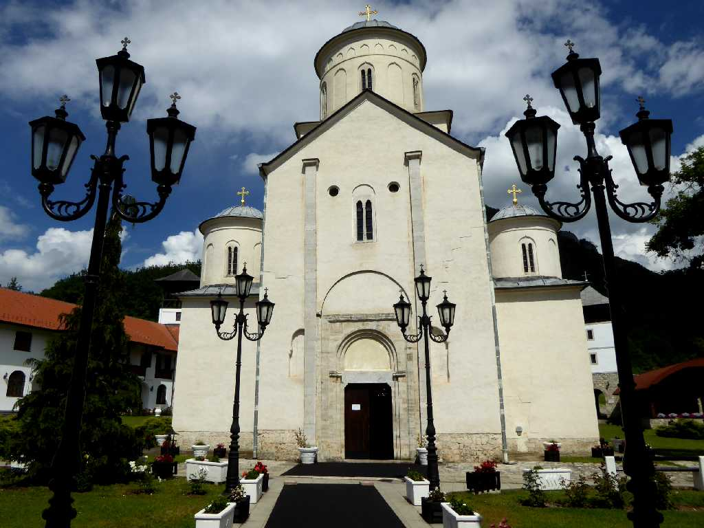
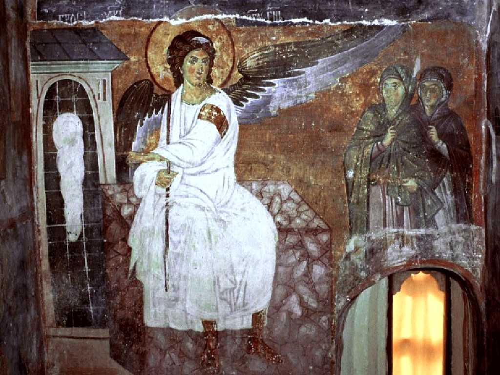
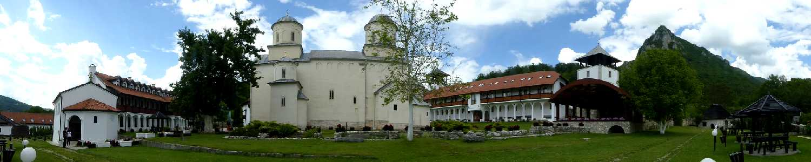
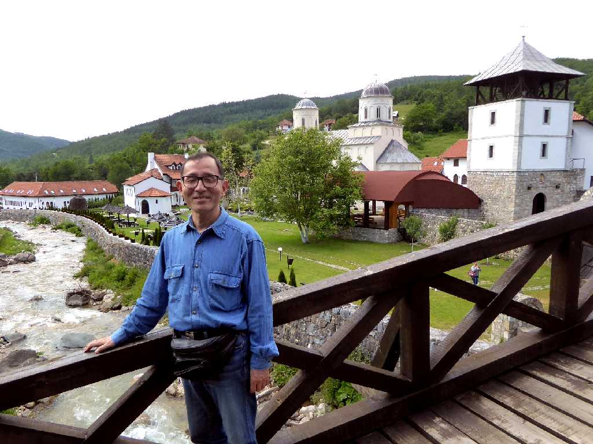

Manastir Mileševa
１２３６年に創られ１６世紀末まで聖サヴァの遺体が安置されていたミレシェバ修道院

Beli Anđeo (The white angel) Manastir Mileševa
セルビアで最も有名なフレスコ画である白い天使とキリストの墓を訪れる聖女達でヨーロッパとアメリカの初宇宙衛星放送映像に用いられた


June 14 2016 Manastir Mileševa